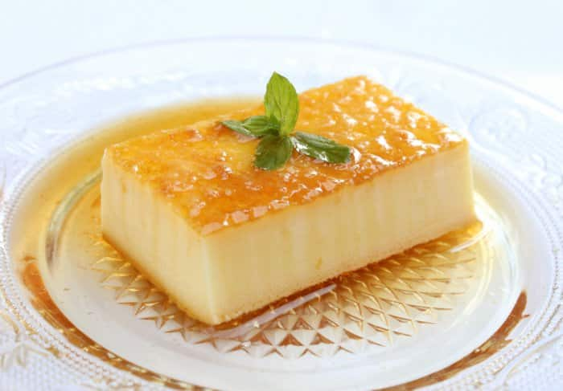
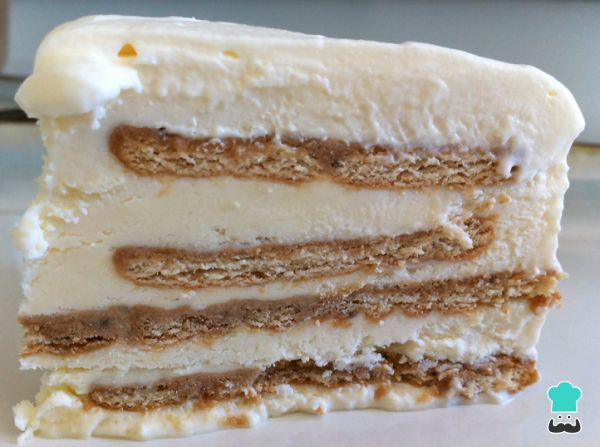

Cocinando
El Blog de los amantes de la gastronomía
Delicioso Postre
Viernes 30 de Agosto del 2019
Cómo hacer un flan de leche condensada. Si hay un postre que me traslade a la niñez cuando lo pruebas es el flan casero, no sólo eso, estoy convencido que pasa en la mayoría de las casas, al menos si se ha hecho flan alguna vez. En nuestras recetas de postres no podía faltar uno de los clásicos de mi infancia, el flan de leche condensada que tanto gusta a mi tía Anita. A partir de un básico de la cocina como el flan se puede jugar con los ingredientes base como huevos, leche y azúcar puedes conseguir el flan que más te guste.

Se ve delicioso el postre, gracias por compartir la receta, la pondre en practica se ve sencillo de realizar.
Postre de Limón
Sabado 31 de Agosto del 2019
Cómo hacer un flan de leche condensada. Si hay un postre que me traslade a la niñez cuando lo pruebas es el flan casero, no sólo eso, estoy convencido que pasa en la mayoría de las casas, al menos si se ha hecho flan alguna vez. En nuestras recetas de postres no podía faltar uno de los clásicos de mi infancia, el flan de leche condensada que tanto gusta a mi tía Anita. A partir de un básico de la cocina como el flan se puede jugar con los ingredientes base como huevos, leche y azúcar puedes conseguir el flan que más te guste.
Se ve delicioso el postre, gracias por compartir la receta, la pondre en practica se ve sencillo de realizar.